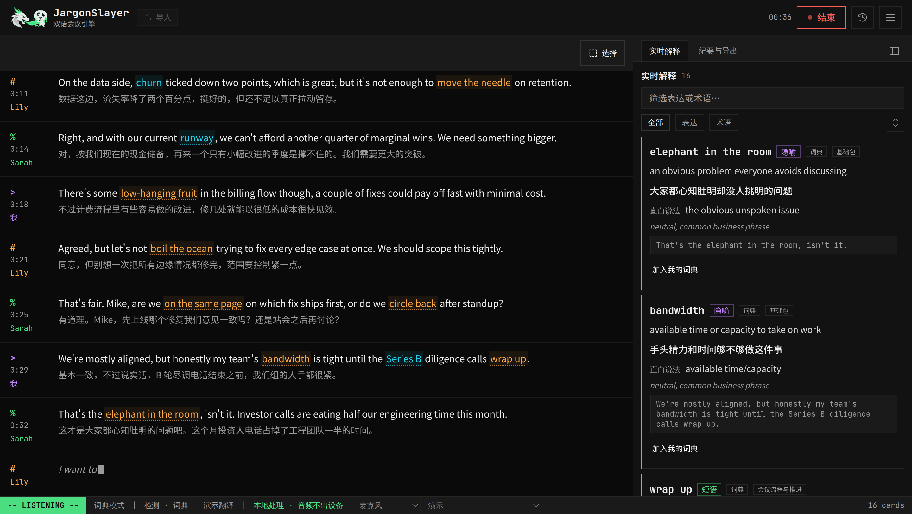
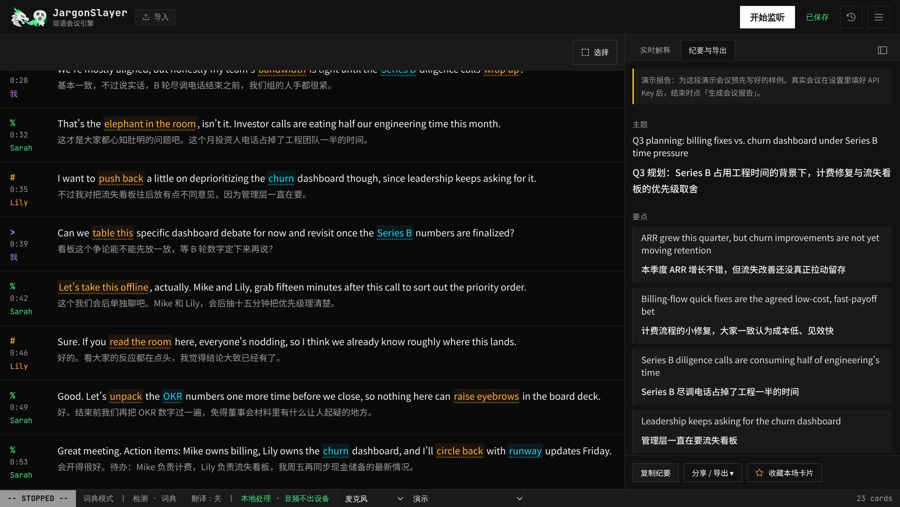
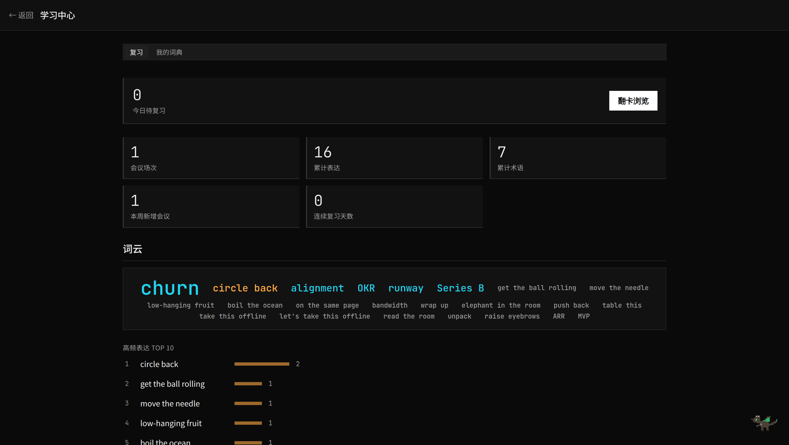

JargonSlayer 文档
JargonSlayer 是面向非英语母语者的英文会议实时理解助手。它把会议转录成文本，识别习语、商务黑话、委婉表达、缩写、专有名词和领域术语，并实时生成简短解释卡片。会议结束后，可以生成双语纪要、全文翻译、学习卡片和可导出的笔记。


读者关心的问题
这份文档按真实用户和维护者会问的问题组织：开会前能不能信任、出问题时怎么判断、想扩展时应该从哪里下手。
我该用哪种模式？
根据隐私和配置成本，在在线体验、本地 Web、词典模式、BYOK AI、本地 Whisper、sidecar 功能之间选择。
哪些数据会离开本机？
音频和文本是两条独立路径。浏览器识别会把音频给浏览器厂商；AI 会把文本给配置的模型端点；词典模式文本留在本机。
为什么卡片晚到？
词典命中是即时的。LLM 检测、翻译、搜索和说话人分离都是后台任务，可能稍后返回并补丁式更新会话。
文本会不会丢？
转录文本是前台状态。后台结果可能失败或晚到，所以路线图会引入按片段记录覆盖情况的任务账本。
各种导入有什么区别？
文稿导入先解析。浏览器音视频导入在浏览器内跑 Whisper。sidecar 导入可以处理更重任务和说话人分离。URL 导入只在本地版。
如何扩展词典？
个人词典适合自己的术语；远程词典包适合共享数据。大型缩写源应先筛选，再作为可选词典包导入。
完整主题列表
- 模式选择与部署层级：在线体验、本地 Web、PWA、macOS 桌面版、Chrome 插件。
- 转录路径：浏览器识别、本地 Whisper、标签页音频（本地/云端）、Soniox、Deepgram、演示、文稿导入、浏览器 Whisper 导入；桌面版的引擎清单不一样（麦克风 · 本地 Whisper、系统/App 音频），见「桌面版」。
- 线上会议音频捕获：麦克风、标签页音频、虚拟声卡、loopback，或（桌面版）系统/App 音频。
- 桌面版专属：系统/App 音频权限流程、首次引导（BYOK OAuth/粘贴、说话人分离 token）、后台任务中心、更新检查。
- 检测行为：词典底座、LLM 升级、置信度阈值、去重、个人词典优先级。
- 翻译行为：实时双语转录、导入时翻译、会后全文翻译。
- AI 提供商配置：Anthropic、OpenAI 兼容端点、OpenRouter、Poe、Ollama、分任务模型。
- 隐私边界：音频、转录文本、API Key、历史、自动导出、webhook。
- 导入限制：文件类型、浏览器模型下载、45 分钟浏览器音频上限、200 MB 浏览器音频上限、视频提取。
- 说话人标签：批处理分离、实时分离 beta、用户改名优先；另有单句/批量手动指定与「应用到本句及之后」，以及审阅制的 AI 转写修订。
- 会议中的其他能力：悬浮字幕（网页 Document 画中画、桌面版字幕条）、崩溃恢复草稿、划词解释后台生成。
- 外观：九套内置主题、自定义主题编辑器（JSON 导入导出）、界面字体与等宽字体、毛玻璃开关、字号控制。
- AI 透明度：按任务（检测/解释/翻译/报告）显示所用模型、路由方式与调用/失败/QC 丢弃次数。
- 导出和自动化：Markdown、JSON、Anki TSV、Cornell 笔记、文件夹自动保存、webhook payload。
- 失败模式：无 Key、限流、sidecar 不可达、后台标签页节流、过期异步结果。
- 未来实时搜索：后台增强，不抢走会议中的前台焦点。
快速开始
三条路都能跑起来 JargonSlayer，全部免费：macOS 桌面版（最省事，签名安装包）、网页版（在线体验或本地自托管）、Chrome 插件（轻量划词查词）。
桌面版（macOS，Apple Silicon）
- 在 releases/latest 下载签名并公证的 DMG。
- 打开 DMG，把 JargonSlayer 拖进「应用程序」，启动它。
- 首次启动会出现一个全屏向导。macOS 26+ 上第一步是选引擎：系统识别（开箱即用）——选它就跳过整个安装流程，直接可用；或 Whisper（更高质量）——继续原有安装。选 Whisper 后，点击
开始安装之前不会下载任何东西：随后它会把独立的 Python 运行环境、faster-whisper 和你选的模型（预选 medium）全部装进应用自己的数据目录，不碰系统 Python。 - 向导结束后还有两步可跳过的引导：连接 OpenRouter（用于 AI 检测/解释）、填入 Hugging Face token（用于说话人分离）。详见下方「桌面版」。
网页版
先试试 在线体验——零安装。不管走哪条路，最快理解产品的方式都是内置演示：打开 ≡ 菜单 → 演示，不需要麦克风，也不需要 API Key。
或者自己跑起来：
git clone https://github.com/mianaz/jargonslayer.git
cd jargonslayer
npm install
npm run dev
# 打开 http://localhost:3000如果需要更接近生产环境的本地运行方式，使用 npm run build 和 npm start。
Chrome 插件（JargonSlayer Lite）
在 releases 下载 zip 并解压，然后打开 chrome://extensions → 开启「开发者模式」→「加载已解压的扩展程序」→ 选中解压后的文件夹。Chrome 网上应用店上架还在审核中，目前只能这样手动加载。Lite 在侧边栏里提供实时麦克风转录 + 内置词典 + 设备端翻译——没有 LLM 检测，没有标签页/系统音频，也没有账号；完整能力对比见下方「部署与打包」。
会议流程
1. 开始监听
先选「收听方式」（用麦克风 / 浏览器标签页 / 系统·App 音频 / 导入——会前的模式卡片，引擎自动匹配），再点 开始监听。最终转录片段会进入正文区域；未定稿的中间结果会以更弱的样式显示。
2. 阅读卡片
右侧显示表达解释卡和术语卡。缩写、公司名、产品名、指标、技术术语会进入术语通道；重复命中只增加次数，不刷屏。
3. 会后复盘
停止会议后生成报告，导出 Markdown、Anki TSV、JSON 或 Cornell 笔记，也可以之后从历史中重新打开。
- 点击转录里的下划线表达，可以跳到对应卡片。
- 选中任意转录文本即可即时查询并存进个人词典。解释在后台生成，关掉弹窗也不会丢，做完自动并入卡片列表。
- 说话人可以手动指定：单句，或一次选中多句一起改，单句操作里有「应用到本句及之后」；实时监听时侧边跟着一个「当前说话人」标记。手动指定过的句子会被锁定，后续自动说话人分离不会覆盖它。点击说话人标签即可改名。
悬浮字幕
从 ≡ 菜单打开悬浮字幕，实时转录会弹成一个小小的置顶字幕视图——只显示最后一句定稿、正在识别的中间句，加最近一条解释释义。网页版用的是 Document 画中画窗口（Chrome/Edge 116+；浏览器没有这个接口时，菜单项自动隐藏）。桌面版没有第二个窗口，而是把主窗口自己缩成一条无边框字幕条，随便点哪儿都能拖动，关掉再还原成原来的大小。它适合压在视频通话上层看，主应用退到后面。iOS 没有这条路径，菜单里不显示。
崩溃恢复
会议进行中会实时写自动草稿。页面刷新、标签页被关、浏览器崩溃后重新打开，历史里会出现一条恢复到历史记录横幅，把中断前的内容一键找回，一次意外不至于赔掉整场会议。
转录引擎
网页版和桌面版的引擎清单不一样——桌面版完全没有浏览器识别（Tauri 的 webview 没有 Web Speech API），但多了网页版做不到的、基于 CoreAudio 的系统/App 音频捕获。引擎选择器本身的位置也变了：现在不管什么屏幕宽度，都是底部状态栏里的一个下拉菜单（以前是 Header 里的 tab/pill）。
网页版
| 引擎 | 配置成本 | 音频去向 | 适合场景 |
|---|---|---|---|
| 演示 | 无需配置 | 无音频；脚本回放 | 快速体验完整流程 |
| 浏览器识别 | 无需配置，推荐 Chrome/Edge | Chrome 139+ 有本地语言包时仅本机（设备端）；否则浏览器厂商的语音服务（云端） | 日常低敏会议 |
| 本地 Whisper | Python sidecar（手动安装） | 本机 127.0.0.1 | 隐私敏感、离线、稳定转录 |
| 标签页音频 | 同一个本地 sidecar | 本机 | 捕获线上会议中对方的声音 |
| Soniox（实验） | Soniox API Key（自备） | 直连 Soniox 实时接口（云端，你自己的 Key） | 中英夹杂实时场景；通过内部基准测试前保持「实验」标记；在线体验另有限量试用，见下方说明 |
| Deepgram | Deepgram API Key（自备） | 云端处理（Deepgram，你自己的 Key） | 纯英文会议，追求云端识别质量 |
桌面版（macOS）
| 引擎 | 配置成本 | 音频去向 | 适合场景 |
|---|---|---|---|
| 麦克风 · 本地 Whisper | 无需配置——应用自带自管 | 本机 | 默认日常引擎，开箱自带 medium 模型 |
| 麦克风 · Soniox（实验） | Soniox API Key（自备） | 直连 Soniox 实时接口（云端，你自己的 Key） | 和网页版一样，面向中英夹杂场景 |
| 系统/App 音频 | 无需配置——同一个内置本地 Whisper | 本机 | 捕获在 Zoom、Teams、微信等原生 App 里开会时对方的声音，不用虚拟声卡 |
| 系统识别 · 开箱即用（v0.4.3） | 无需配置——macOS 原生识别，不下载模型、不装 Python | 本机，且音频不出捕获进程 | macOS 26+ 上免安装的第一场会；约 30 种语言，术语表参与识别偏置；不支持说话人分离，中文可能不带标点 |
| 英文加速（Parakeet，v0.4.4） | 模型选择器里手动开启，非默认——需 Apple 芯片（M 系列）+ macOS 14+，约 2.5GB（含约 1GB MLX 运行环境） | 本机，音频不离开这台设备 | 英文优先的会议；比 Whisper 快得多（批量推理约百倍实时）；暂不支持实时说话人分离 |
桌面版没有浏览器识别引擎；网页版的标签页音频，在桌面版对应的位置是系统/App 音频。权限流程和捕获范围见下方「桌面版」。
本地 Whisper（网页版手动安装）
下面这套手动安装的 sidecar 是给网页版用的。桌面版通过首次启动向导自己安装、自己管理本地 Whisper，不用碰终端——见「桌面版」。
cd sidecar
python3 -m venv .venv
source .venv/bin/activate
pip install -r requirements.txt
python whisper_server.py --model smallsidecar 通过 ws://127.0.0.1:8765 提供实时 websocket 转录，并通过本地 HTTP job API 处理录音导入。这条手动路径的模型可选 tiny、base、small、medium、large-v3，日常默认推荐 small（桌面版向导的模型清单是精选过的 small/medium/large-v3/large-v3-turbo 四档，预选 medium）。
导入
文稿导入
- 打开
历史，选择导入文稿。 - 粘贴文本，或上传
.txt、.srt、.vtt。 - 检查解析后的片段、时间戳和说话人。
- 可选：同时生成中文对照。
- 导入并分析，结果会保存为已停止的会议。
音频/视频文件
- 打开
历史，选择导入录音。 - 选择浏览器本地转录，或本地 Whisper sidecar 路径。
- 常见音频文件可直接导入；视频文件会先在浏览器内用 ffmpeg.wasm 提取音轨。
- 使用 sidecar 路径时，如果配置了 pyannote，可以做说话人分离。
视频 URL 导入
视频 URL 导入只属于本地版。sidecar 会在你的机器上调用 yt-dlp，再走本地转录任务管线；在线体验不提供这个服务器侧能力。
桌面版
桌面版把同一个应用装进原生 Tauri 外壳，本地 Whisper 由应用自己安装和管理——安装步骤见「快速开始」。这一节只讲桌面版独有的部分：系统/App 音频引擎、两步可选引导、后台任务中心、延迟提示、更新检查。
系统/App 音频
在引擎下拉菜单里选系统/App 音频，就能转录 Zoom、Teams、微信这类原生 App 里对方说的话——不需要虚拟声卡，不需要装 BlackHole/VB-Cable。它替换了桌面版旧版那个只能失败的「标签页音频」——Tauri 的 webview 里没有标签页分享选择器可以调用；网页版的标签页音频不受影响。
- 捕获范围：这台 Mac 当前正在播放的所有声音——会议对方的话，但如果同时在放音乐或弹通知音，也会被录进去。它从不捕获麦克风。
- 权限：macOS 会在你真正开始用这个引擎监听时（不是选中它的那一刻）弹一次「系统音频录制」授权——这是它自己的 TCC 权限类别，和麦克风、屏幕录制完全分开。
- 系统版本：需要 macOS 14.4 或更高版本。低于这个版本，选项会在选择器里显示为置灰并注明原因，而不是直接隐藏。
- 音频去向：仅本机——音频只送到内置的 Whisper sidecar，不会去别处；跟麦克风类引擎一样，状态栏显示「音频在本地处理」。
首次引导
安装向导跑完之后（不是每次启动都出现——已经有健康本地服务的老用户不会被重复打扰），会出现两步各自独立、都能跳过的引导：
- 连接 OpenRouter——直接粘贴已有的 Key，或者点「使用 OpenRouter 登录」走一键 OAuth：应用会打开你的系统默认浏览器完成登录，再自动把控制权交还给应用。如果 OAuth 失败，会有一个回退链接指向
openrouter.ai/keys，去创建并粘贴 Key。这一步打通的是 AI 检测、翻译和会后报告。 - 说话人分离 token——粘贴一个 Hugging Face token，前提是已经在 Hugging Face 上接受了 pyannote 的 segmentation 和 speaker-diarization 两个模型的使用条款（这一步直接给出两个链接）。跳过是零摩擦的默认选项——说话人分离会保持关闭，直到你回来配置。
这两步写入的设置，跟手动在设置里填的完全是同一处：这里填过的值，和之后在 设置 → AI 检测 / 设置 → 说话人分离 里填的效果完全一样。两步都跳过也完全不影响正常使用云端/无需 BYOK 的功能。
后台任务中心
Header 里有一个「后台任务」入口（仅桌面版），有任务在跑或者有新版本可用时会亮一个提示点。打开后分两个区：
- 系统状态——「本地服务」一行显示 托管（应用自己管）还是 外部（你自己起的 sidecar）模式，加上 运行中 / 未连接 / 未知 状态，旁边有「重新检测」按钮可以随时手动探测；「应用更新」一行见下方「更新检查」。
- 任务——模型下载、说话人分离扩展安装，以及各种导入任务，每个都有进度显示。模型下载或分离扩展安装失败会出现「重试」按钮；已完成的导入任务点一下就跳转到对应会话。
转录延迟提示
正在使用本地 Whisper 类引擎监听时（麦克风 Whisper、标签页音频、系统/App 音频），只要解码延迟持续超过约 2 秒，状态栏就会亮起一个 延迟 ~Ns 的提示。这是「机器/模型这个组合快跟不上实时了」的预警，不是错误——如果经常出现，换成更轻的模型（small）通常能在老机器上解决。
更新检查
应用每次启动会安静地检查一次 GitHub 上的最新发布（带 ETag 缓存，重复检查很轻量），在 后台任务 → 系统状态 里显示当前版本和最新版本，随时可以点「重新检查」。这只是一次检查，不是自动安装：有新版本时，点「打开下载页」跳转到 GitHub release 页面，自己下载安装。
AI 模式与模型配置
词典模式
在设置中关闭 AI 检测，转录文本就不会因为 AI 检测离开本机。内置词典仍会即时检测固定表达和术语。这是零 Key、零成本、本地文本路径。
在线体验 AI
在线体验可以使用预览服务器配置好的模型路径。文本会经过项目服务器内存中转，再转发到 OpenRouter，并带 data_collection=allow。请把预览版 AI 文本视为会与模型提供商共享。
BYOK AI
- 打开
设置，进入AI 检测。 - 选择 Anthropic，或 DeepSeek、Qwen、OpenRouter、Poe 预设、Ollama 等 OpenAI 兼容端点。
- 按需填写 base URL。
- 在 UI 中输入 API Key、用一键 OAuth 连接 OpenRouter，或使用
ANTHROPIC_API_KEY等服务端环境变量。 - 选择检测模型和报告模型，测试连接并保存。
分任务模型
高级设置可以为检测、翻译、报告使用不同提供商或模型。常见策略是实时检测用快而便宜的模型，会后报告用更强的模型。
AI 状态面板
从底部状态栏打开AI 状态，能一眼看清 AI 到底在做什么。检测、解释、翻译、报告四类任务分别显示各自用的模型、路由方式（自带 Key / 服务端代理 / 未配置），以及调用、失败、QC 丢弃的累计次数。状态栏还有一个随时能瞄一眼的状态小标。没配 Key 时，面板会直接告诉你哪些功能回退到词典、哪些暂不可用，而不是默默出错。
复习与学习
/review 页面把历史会议和个人词典变成轻量学习中心。

- 统计条展示会议数、累计表达、累计术语和近期活动。
- 词云用于快速扫过反复出现的表达和术语。
- Top 10 列表用于集中复习最高频项目。
- 翻卡练习适合快速巩固；可以标记认识/不认识。
- 重度间隔重复仍建议导出 Anki TSV。
词典与词典包
个人词典
- 在应用中打开
我的词典。 - 手动添加条目，或选中转录文本后点击
加入我的词典。 - 个人词典会参与后续会议检测，并优先于内置词典。
- 可以拆成多个自定义命名词包，各自开关，按会议场景勾选启用。
- 需要独立复习流程时，可导出为 Anki TSV。
内置词典包
词典包按主题控制检测范围。目前内置 14 个包：基础表达、会议流程、项目执行、反馈、销售增长、委婉批评、学术会议、闲聊过渡、商务术语、技术术语、医药与生物科技，以及 v0.4.6 新增的统计学、机器学习、生物信息学（三个包合计约 226 个术语，中英释义取自 Wikipedia、EDAM 本体和 Google ML Glossary）。内置词典整体 650+ 条。每个包都能按会议单独开关，core 始终开启。统计学/机器学习包里有几个日常英语高频词（mean、prior、attention、precision 等）默认不触发，只有你自己定制过启用列表后才会命中，平时闲聊不会被误标。
社区词典包
远程词典包是从 GitHub raw 或 jsDelivr URL 安装的 JSON manifest。它可以包含表达条目和术语条目；缩写用 terms 且 type: "acronym"。
{
"id": "biotech-terms",
"name": "Biotech Terms",
"version": "1.2.0",
"terms": [{
"term": "IND",
"type": "acronym",
"gloss_en": "Investigational New Drug application",
"gloss_zh": "美国 FDA 新药临床试验申请"
}]
}外观
设置 → 显示 下的所有项都只作用于这台浏览器或这台机器，保存即时生效，不随数据外传。
内置主题
九套内置主题跑在严格校验的 17-token 引擎上（只收 hex、逐项校验、以 CSS 属性注入而不是拼字符串）。每套都按 WCAG AA 逐项测过对比度，原生控件和应用图标跟随它的深浅方案：
- 终端（默认）——默认的终端深色。
- 终端（浅色）——它的暖纸浅色版。
- 清晰（高对比深色）——为可读性加强对比的深色。
- 水墨（宣纸朱批）——宣纸上的水墨加朱砂批注（浅色）。
- 魔典（哥特烫金）——皮面烫金的哥特风（深色）。
- 黑金（黑色电影）——黑金编辑部的黑色电影感（深色）。
- 青绿（矿彩山水）——矿物色青绿山水（深色）。
- 像素（8-bit 任务日志）——深靛蓝底、红黄绿蓝紫五色像素点缀的任务日志风（深色）。本次新增。
- 笔记（课堂手绘）——白纸卡片、铅笔蓝与红笔批注的课堂笔记风（浅色）。本次新增。
自定义主题编辑器
内置主题之外，主题网格里有一个新建格子，点开是就地编辑器。可以从零建一套，也可以复制任意主题（内置或自定义）再改。17 个 token 每个都配一个原生取色器加一个 hex 输入框，可设深浅方案、起名字。编辑时有实时预览，取消就回到已保存的那套。哪个 token 掉到 AA/控件对比度门槛以下，会即时给对比度提示——只警告，不拦你。主题可导出成 JSON 文件，也能粘贴或选文件导入；导入的主题会经校验并重新分配 id，任何导入文件都盖不掉、也覆盖不了内置主题。删除要二次确认；删掉当前正用的那套会回退到终端默认。
字体
两个独立选择器——界面字体和等宽字体——各自给零下载的系统预设，或你自己输入的系统字体名。界面字体预设有 默认 / 衬线 / 圆体；等宽字体预设有内置的 JetBrains Mono 默认 / 你的系统等宽。自定义名字在使用前会做净化处理。
毛玻璃与字号
毛玻璃开关默认关闭；打开后会给真正的浮层——设置面板、抽屉、弹出层、悬浮卡、导入中心——加一层背景模糊。旁边有三个字号控制：全局字号（整体大小，四档 小 / 标准 / 大 / 特大，类似浏览器缩放）、转录字号（只放大转录区，独立于全局）、转录行距（转录区行距）。
Bit 装扮
状态栏的像素龙 Bit 有一柜子穿搭。跟随主题（默认）时每套内置主题给它配一件：清晰是圆框眼镜，水墨是斗笠，魔典是巫师帽，黑金是礼帽，青绿是玉冠，像素是勇者头带，笔记是耳后铅笔；两套终端主题和自定义主题保持原装。也可以手动指定任意一件（或选原装脱掉），不受主题限制。睡着时帽子还戴着；翻肚皮的时候会掉在旁边。报告生成完、复习队列清空时它会张开翅膀撒一把像素火花庆祝，学习中心的角落里也蹲着一只。
导出与备份
单次会议导出
- Markdown 报告，可选 Obsidian/Dataview frontmatter。
- docx 导出，下载即是可编辑的 Word 文档。
- Anki TSV 学习卡片，或用 AnkiConnect 一键同步进本地 Anki（自动去重）。
- 带
schemaVersion: 1的完整会议 JSON。 - 复制纪要到剪贴板。
- Cornell 笔记可导出 PNG 或 Markdown。
自动导出
设置中可以把每次会议自动保存为 Markdown + JSON 到指定文件夹。该能力依赖 File System Access API，因此更偏 Chromium 浏览器。它适合本地自动化、Obsidian vault 和 agent 工作流。
Webhook
设置中可以配置 URL，在每次保存会议后 POST { event: "meeting.saved", session }。接收端应尽快返回 200 并异步处理；客户端超时 8 秒，无重试。
全量备份
全量备份包含会议、词典和设置。恢复时会先预览内容，并清理订阅直连连接状态等风险设置。
隐私
JargonSlayer 的隐私策略是清楚标出每条数据路径，而不是笼统承诺。不同会议应该选择不同模式。
| 数据 | 去向 |
|---|---|
| 本地 Whisper / 标签页音频 / 系统/App 音频（桌面版） | 仅本机——loopback websocket，或（系统/App 音频）本机进程通道进同一个内置 sidecar |
| 系统识别（桌面版，macOS 26+） | 仅本机——音频在捕获它的进程内直接转成文字，不经过任何本机通道 |
| 英文加速 Parakeet（桌面版，Apple 芯片） | 仅本机——和本地 Whisper 一样音频不出本机；模型本身首次使用时从 Hugging Face 下载一次 |
| 浏览器识别音频 | Chrome 139+ 有本地语言包时仅本机（设备端）；否则浏览器厂商语音服务 |
| 音频（Soniox 引擎，自备 Key，实验） | 云端即时处理不留存——用你自己的 Key 经 WSS 直连 Soniox 实时接口 |
| 音频（在线体验：Soniox 限量试用 / 标签页音频） | 云端即时处理不留存——无需 Key；每人每天最多 3 段、单次最长约 10 分钟，总额度先到先得 |
| 音频（Deepgram 引擎，自备 Key，英文） | 云端处理——用你自己的 Key，转写在 Deepgram 云端完成 |
| 音频/视频文件导入 | 浏览器内转录；文件不上传 |
| 在线体验 AI 文本 | 项目服务器内存中转，再到 OpenRouter，带 data_collection=allow |
| BYOK AI 文本 | 你配置的模型提供商端点 |
| 订阅直连 detect/define | 本地 claude 或 codex CLI |
| 词典模式文本 | 仅本机 |
| 历史、设置、Key | 本地浏览器存储；无账号 |
AI 检测，并避免把 webhook/自动导出指向外部位置。FAQ
浏览器不支持语音识别
浏览器识别推荐 Chrome 或 Edge；也可以切换到本地 Whisper。
Whisper 连接不上
确认 sidecar 终端正在运行，URL 是 ws://localhost:8765，本地防火墙没有拦截 loopback。
检测太多或太少
调整置信度阈值，启用/禁用词典包，或按会议场景开关 AI 检测。
报告生成慢
长会议会分块并行翻译；一到两分钟属于正常范围。卡片不需要生成报告也能导出。
移动项目目录后 sidecar 坏了
Python 虚拟环境包含绝对路径。移动或重命名仓库后，重建 sidecar venv。
桌面版：本地服务显示「未知」
应用还没探测过本地服务，或者上一次探测没有返回。打开「后台任务」（桌面版右上角），点「本地服务」旁边的「重新检测」；如果还是不行，去 设置 → 转录引擎 检查。完整的后台任务中心说明见「桌面版」。
深入规格
这些规格面向真正使用和维护这个工具的人：什么时候该信任它、出问题如何判断、要扩展时有哪些边界。
模式选择矩阵
| 使用场景 | 推荐配置 | 取舍 |
|---|---|---|
| 30 秒体验产品 | 在线体验 + 演示 | 零配置，但预览 AI 文本走预览提供商路径。 |
| 日常低敏会议 | 浏览器识别 + BYOK AI | 实时配置最简单；音频会进入浏览器厂商语音服务。 |
| 隐私敏感会议 | 本地 Whisper + 词典模式 | 音频和文本都留在本机，但解释能力限于词典和个人词典。 |
| 既要隐私又要上下文检测 | 本地 Whisper + Ollama OpenAI 兼容端点 | 可全本地，但质量取决于本地模型。 |
| 听懂线上会议中对方声音 | macOS 桌面版：系统/App 音频，零额外配置。网页版：标签页音频或虚拟声卡 + 本地 Whisper。 | 桌面版只需要一次性授权；网页版需要 sidecar，用虚拟声卡还要额外的系统级路由设置。 |
| 分析会后录音 | 短文件用浏览器音视频导入；大文件/说话人分离用 sidecar 导入 | 浏览器路径最省事；sidecar 路径适合重任务。 |
设置契约
主设置对象控制转录、模型路由、检测、导出、显示、说话人分离、双语转录和订阅直连。
engine：实时捕获引擎。import和browser-whisper只出现在导入会话中，不是实时引擎选项。language：传给 Web Speech 的 BCP-47 语言，例如en-US。whisperUrl：本地 Whisper websocket，默认ws://localhost:8765。provider、baseUrl、apiKey：主 LLM 路由。Key 为空时，服务端 route 可以依赖环境变量。taskLlm：可选分任务 provider/model 覆盖，支持translate、detect、summary。划词解释跟随 detect 配置。autoDetect：整体开关。aiDetect只控制 LLM 层；开启检测时，词典层仍是即时本地底座。minConfidence：合并检测结果时使用的置信度阈值。enabledPacks：null表示启用所有词典包；core始终开启。bilingualTranscript：把每个最终片段实时翻译成explainLanguage。hfToken和realtimeDiarize：本地 sidecar 说话人分离配置。themeId、customThemes、uiFont、monoFont、overlayGlass、fontSize、transcriptScale、transcriptLeading：显示设置（见外观），独立于主题 token 持久化；customThemes存用户自建的主题定义，字体按设计单独存、不进主题 JSON。sidecarMode（仅桌面版）：managed（默认——应用自己安装/启动/重启 sidecar）或external（连接你自己起的 sidecar，跟网页版一样）。
检测规格
- 启用检测时，每个最终转录片段都会被词典同步扫描。
- LLM 层只批处理新增文本，之前的 context tail 仅用于消歧。
- LLM 结果可以原地升级词典卡片，但不会撤回词典命中。
- 重复表达按归一化 key 合并，更新 count 和 last-seen 元数据。
- 个人词典优先于内置词典，且不会被 AI 覆盖。
- 全大写缩写使用更严格匹配，降低误报；普通混合大小写术语匹配更宽松。
翻译规格
- 实时双语转录按 segment id 分小批翻译最终片段。
- 会议中打开双语转录时，会补翻最近几个尚未翻译的最终片段。
- 手动修改某个片段文本时，旧翻译会失效；会议仍在进行且开关开启时，会重新入队。
- 无 Key 暂停是可自愈的：填入 Key 后，新翻译工作可以恢复，不必重启会议。
- 连续 429 会暂停，并最终跳过最老的卡住批次，避免新片段一直被阻塞。
- 会后报告翻译是另一条路径：按 segment index 分块翻译，并尽量修复缺失 index。
导入规格
| 导入路径 | 处理方式 | 限制 / 说明 |
|---|---|---|
文稿粘贴 / .txt / .srt / .vtt | 解析、构建合成会话、检测、可选翻译、保存。 | 有时间戳的 cue 会归一到导入时间；纯文本会使用合成时间间隔。 |
| 浏览器音频导入 | 浏览器 AudioContext 解码，重采样到 16 kHz mono，交给浏览器 Whisper worker。 | 45 分钟时长上限；200 MB 压缩音频上限。 |
| 浏览器视频导入 | 用 ffmpeg.wasm 提取音轨，再复用浏览器音频路径。 | 视频提取有单独大小限制；首次运行可能下载浏览器侧模型资源。 |
| Sidecar 录音导入 | 本地 job API 处理转录和可选说话人分离。 | 需要本地 sidecar；进度显示是 UI 本地状态，刷新会丢失显示但任务可继续。 |
| 视频 URL 导入 | 本地 sidecar 使用 yt-dlp，再走同一转录 job 管线。 | 仅本地版；用户自行负责版权和平台条款。 |
失败与恢复规格
- 无 API Key：检测回退到词典；实时翻译暂停；生成报告会提示需要 Key。
- 限流：检测对 429 带抖动重试一次；翻译会暂停，并避免老批次永久阻塞新片段。
- Sidecar 不可达：本地 Whisper、sidecar 导入、URL 导入、说话人分离、订阅直连不可用；浏览器本地导入仍可处理支持文件。
- 会议已切换：异步结果携带
meetingGen；旧会议的过期结果会被丢弃。 - 后台标签页：浏览器会节流 timer，所以检测也会在片段到达和可见性变化时触发 flush。
- 停止后的晚到结果：检测和翻译可能在停止后到达；store 会安排补保存，避免历史记录缺尾部结果。
词典与学习规格
- 今天个人词典是持久学习主场；会议记录保持为不可变归档。
- 条目可以手动创建、由划词 AI 定义创建，也可以从本场卡片收藏。
- 每个条目保存 headword、variants、解释、例句、原始上下文、用户笔记、来源、时间戳和复习状态。
- 表达条目可保存分类、英文含义、plain-English 改写和语气。术语条目可保存术语类型和英文 gloss。
- 复习状态包括 mastered、review count、last reviewed time。v0.3.0 已升级为真正的 learn-set 和到期复习循环（SM-2 简化排期）。
自动化规格
- 自动导出会写入
YYYY-MM-DD-HHmm-jargonslayer.md和同名.json。 - 文件夹自动保存依赖 File System Access API，因此主要面向 Chromium。
- Webhook 发送
meeting.savedpayload，包含schemaVersion: 1、exportedAt和完整session。 - 全量备份包含会议、词典和设置。默认可剥离 API Key、HF token、agent token、webhook URL 和分任务 API Key。
- 恢复备份会清理订阅直连状态，避免静默重连到旧的本地 agent sidecar。
未来实时搜索规格
实时搜索应该是可选的后台增强委派者，而不是实时检测的阻塞步骤。它接收表达、最近上下文、meeting generation 和 segment ids；返回简短引用或消歧说明；再补丁式挂到现有卡片上，不改变转录焦点。
- 搜索应由歧义、用户请求或显式卡片操作触发，而不是默认搜索每张卡。
- 结果应作为 reference 或 context note 附加到卡片，不替换本地解释。
- 搜索 job 的优先级应低于实时转录、词典扫描和可见卡片检测。
- 隐私设置需要明确区分本地词典、模型提供商 AI、联网搜索调用。
异步委派设计
产品体验应该像一个稳定的前台进程，背后有多个专业后台 worker。前台负责监听、文本编辑、用户焦点和已保存会议状态；昂贵任务交给异步委派者，结果准备好后再自然合并回来。
translate | detect | search | diarize 这几种 kind。前台
追加最终转录片段，保持用户焦点稳定，允许编辑和复盘，渲染当前最好的状态，不等待 AI 或搜索。
委派者
翻译、LLM 检测、实时搜索、说话人分离、会后报告各自排队运行，有优先级和重试策略。
任务账本
按片段记录覆盖情况：词典已完成、LLM 检测待处理/完成/失败、翻译待处理/完成/跳过、搜索待处理/完成/过期。
{
"id": "job_x",
"kind": "translate | detect | search | diarize",
"meetingGen": 12,
"segmentIds": ["seg_1", "seg_2"],
"textHash": "...",
"priority": 2,
"status": "queued | running | done | failed | stale",
"attempts": 0
}结果只有在 meeting generation 仍匹配、目标片段仍存在、源文本 hash 仍是当前版本时才应用。结果应该以 patch 方式合并到相关字段，不能替换前台转录，也不能抢走用户焦点。
未来实时搜索也天然适合这个模型：卡片用当前表达和最近上下文发起后台搜索，先显示本地解释；搜索返回后再附加参考来源或消歧说明。
架构
仓库是一个 npm workspace：apps/web（Next.js 15、TypeScript、Tailwind、zustand、IndexedDB、服务端 LLM route proxy）加上 packages/core（纯 TS 共享核心——词典、类型定义）、apps/desktop（Tauri 外壳）、apps/extension（Chrome MV3 侧边栏）。apps/web 里的 zustand store 是转录片段、中间结果、卡片、术语、纪要、设置和会议历史的共享总线。
apps/web（浏览器客户端）
transcription engines
demo | Web Speech | local Whisper | tab audio | appaudio（桌面版）
zustand store
segments | cards | terms | summaries | settings | sessions
detection
dictionary instant floor
LLM scheduler and dedupe
UI
transcript | cards | history | summary | review
Server routes
/api/detect
/api/define
/api/translate
/api/summarize
Sidecars（Python）
whisper_server.py
agent_server.py
apps/desktop（Tauri v2，macOS）
Rust 核心：用固定版本的 uv 装独立 Python、
管理 sidecar 进程、CoreAudio process-tap 管线
jargonslayer-audiocap：签名的 Swift 辅助进程（CoreAudio process tap）
apps/extension（Chrome MV3）
侧边栏：Web Speech 实时捕获 + 内置词典 + 设备端 Translator API
自己的 IndexedDB 数据库 + chrome.storage.local，跟 apps/web 的存储互不相通
packages/core
共享类型 + 内置词典，网页版和插件都消费它apps/web/src/lib/types.ts（转出自@jargonslayer/core）维护跨模块契约。apps/web/src/lib/store.ts是应用总线；STT 和检测通过 store 通信，而不是直接互相依赖。apps/web/src/lib/detect/dictionary.ts是同步即时词典层。apps/web/src/lib/detect/scheduler.ts负责 LLM 批处理和词典模式 fallback。apps/web/src/lib/detect/dedupe.ts合并重复命中，并用 LLM 结果原地升级词典卡片。apps/web/src/app/api/summarize/route.ts编排总结、分块翻译和漏检补扫。apps/desktop/src-tauri/src/audiocap.rs监管 Swift 捕获辅助进程，把它的输出重采样后接入既有转录管线。
数据与存储
主要持久化都在本地浏览器存储。历史 meetlingo:* IndexedDB key 会在启动时复制迁移到新命名空间，并保留原数据以便回退。
| 对象 | 存储 | 说明 |
|---|---|---|
| 会议 | IndexedDB | 会议归档和索引 |
| 个人词典 | jargonslayer:glossary | 个人条目和掌握状态 |
| 设置 | jargonslayer:settings | 本地配置 |
| 自动导出文件夹 | jargonslayer:export-dir | 浏览器目录 handle；偏 Chromium |
| 远程词典包 | jargonslayer:remote-packs | 安装来源 URL 和已校验 manifest |
Schema version 1 覆盖会议 JSON、Markdown frontmatter、webhook payload、全量备份和远程词典包。
chrome.storage.local 存收藏的查词记录——从不和网页版的存储同步或共享。本地开发
npm install
npm run dev
# checks
npm run typecheck
npm test
npm run build本地服务端模型 Key 可以放在 .env.local。例如：
ANTHROPIC_API_KEY=sk-ant-...Sidecar
Whisper Sidecar
sidecar/whisper_server.py 处理本地 websocket 实时转录和录音 HTTP job。它使用 faster-whisper、能量 VAD、可选音频保存，并在配置后使用 pyannote 做说话人分离。
说话人分离
录音导入可以做批处理说话人分离。实时说话人分离仍是 beta：sidecar 会在最近一段音频窗口上反复运行 pyannote，把说话人匹配到稳定 registry，再把标签更新发回 UI，不阻塞转录。
订阅直连
sidecar/agent_server.py 是实验性的本地功能。它调用用户自己已经登录的 claude 或 codex CLI，仅用于 detect/define。翻译和总结仍走正常应用 route。
- 默认 loopback 地址：
127.0.0.1:8767。 - 端点：
GET /agent/health、POST /agent/detect、POST /agent/define。 - detect/define 要求 loopback Origin 和启动时打印的一次性连接码。
- 构建开关：
NEXT_PUBLIC_ENABLE_SUBSCRIPTION_DIRECT=1。 - sidecar 不可达、未登录或额度失败时，应用回退到词典检测。
ANTHROPIC_API_KEY，Claude 调用可能优先使用这个 Key，而不是订阅登录。sidecar 会警告，但不会替你 unset。远程词典包
远程词典包会被校验、归一化，并载入内存 registry。加载后，设置页会把它们和内置词典包一起展示。
- manifest 需要
id、name、version。 - 坏条目会被丢弃并打印 warning；只有 manifest 本身不可用时整个包才失败。
- 条目级
pack字段会被忽略，并强制改成 manifest id。 - 只要
version改变，就会触发更新。 - 远程包来自任意 URL，用户应把它视作内容导入。
Global Acronym 这类大缩写源应该先作为候选数据使用，按领域和质量过滤，发布成可选词典包；通过验证后再考虑提升进内置词典。
部署与打包
网页版的形态是 Web App 和 PWA：可以在 Chrome/Edge 中安装成接近桌面应用的窗口，也可以在 iOS/iPadOS Safari 中添加到主屏幕，或作为本地/LAN Next.js 服务运行。macOS 桌面版和 Chrome 插件是两个独立打包、独立发版的产物。
| 形态 | 状态 | 说明 |
|---|---|---|
| 在线体验 | 可用 | 预览层，明确标出限制，本地功能灰显 |
| 本地 Web App | 可用 | 完整本地优先构建 |
| PWA 安装 | 可用 | 使用已有 manifest 和图标 |
| macOS 桌面版（Tauri） | 可用 | 签名并公证的 DMG，见 releases/latest；仅 Apple Silicon，无 Intel 版本 |
| Chrome 插件（Lite） | 可用，需手动加载 | zip 在 releases 页面；Chrome 网上应用店上架审核中 |
| iOS / iPadOS（测试版） | TestFlight 邀请制 | 需要时联系作者获取邀请；iOS 26+，系统语音识别在设备本地转录。Android 与商店上架暂无计划，PWA 已覆盖主要移动场景 |
预览部署使用 NEXT_PUBLIC_DEPLOY_TIER=preview。默认构建是完整本地优先构建。
能力对照表
| 能力 | Chrome 插件（Lite） | 在线体验（预览） | 本地 Web / 桌面版 |
|---|---|---|---|
| 词典检测（即时、离线） | ✓ | ✓ | ✓ |
| 实时转录 | Web Speech（仅麦克风） | Web Speech · Soniox 限量试用（免 Key）· 标签页音频（同一试用额度） | Web Speech · 本地 Whisper · 标签页音频 · 系统/App 音频（桌面版）· Soniox（BYOK，实验）· Deepgram（BYOK） |
| AI 检测/翻译/纪要 | — | ✓ 内置体验 Key（限流） | ✓ 自备 Key（BYOK） |
| 导入文本/音频/视频 | — | ✓ | ✓ |
| 说话人分离 | — | 展示但需要本地 sidecar | ✓ |
| 历史记录 | 本地 IndexedDB，独立数据库 | IndexedDB | IndexedDB |
测试
Web App
npm run typecheck
npm test
npm run buildSidecar
sidecar/.venv/bin/python sidecar/test_agent_json.py
sidecar/.venv/bin/python sidecar/test_agent_postfilter.py
sidecar/.venv/bin/python sidecar/test_agent_server.py
sidecar/.venv/bin/python sidecar/test_ingest_url.py
sidecar/.venv/bin/python sidecar/test_realtime_diar.pysidecar 测试是 plain-assert 脚本，依赖 sidecar/requirements.txt。本地 Whisper 和 agent sidecar 是独立进程，改哪个测哪个。
桌面版（Rust + Swift）
cd apps/desktop/src-tauri && cargo test
cd apps/desktop/src-tauri/audiocap-helper && swift testRust 核心（进程监管、重采样、CoreAudio framing 协议）和签名的 Swift 捕获辅助进程各有自己的测试套件；CI 环境没有真实 CoreAudio session，所以音频捕获相关的测试都是围绕 fake/seam 设计的，不依赖真实 tap。
插件
npm test -w apps/extension路线图
v0.3.0 的全部计划项已上线：学习循环（#48）、统一导入与任务中心（#58）、简单/高级设置（#62）、四套新主题（#52）。v0.4 的全部计划项已上线：
- 桌面应用（Tauri，macOS）：应用自己托管本地 Whisper——安装向导、模型可选可换、说话人分离扩展一键安装；macOS 26+ 另有零安装的「系统识别」引擎（v0.4.3）。签名并公证的 DMG 在 releases 页面。
- 设备端浏览器识别：Chrome 139+ 优先本地识别，云端自动兜底。
- Soniox 实时引擎（实验，自备 Key）：面向中英夹杂场景；通过内部基准测试前保持「实验」标记。
- 系统/App 音频（桌面版，macOS 14.4+）：基于 CoreAudio process tap，捕获这台 Mac 正在播放的声音，替换了桌面版旧版的标签页音频——见「桌面版」。
- 系统识别（桌面版，macOS 26+，v0.4.3）：基于 macOS 原生 SpeechAnalyzer 的零安装引擎——不下载模型、不装 Python，音频不出捕获进程。
- 英文加速（桌面版，Apple 芯片，v0.4.4）：模型选择器里的可选引擎（非默认）——比 Whisper 快得多（批量推理约百倍实时），暂不支持实时说话人分离。
- Chrome 插件（Lite）：MV3 侧边栏，含实时麦克风捕获、内置词典、设备端翻译。
- 后台任务中心、引擎下拉菜单、首次引导、更新检查（桌面版）：四项都在「桌面版」里有完整说明。
- AI 透明面板 + 领域词典包（v0.4.6）：按任务的 AI 状态面板（检测/解释/翻译/报告），显示模型、路由方式和调用/失败/QC 丢弃次数，外加状态栏小标；三个新内置词典包——统计学、机器学习、生物信息学（约 226 个术语）；以及一处检测质量修复，普通句子不再被误判成黑话。
v0.5 目前已上线：
- 模式优先 UI：会前先选「怎么听」（麦克风 / 标签页音频 / 系统/App 音频 / 导入文件）而不是先挑引擎，应用按平台和配置自动匹配对应引擎；新手引导同步重写。
- 说话人工具：单句/批量指定说话人、「应用到本句及之后」、实时「当前说话人」标记；手动指定的句子会被锁定，不会被后续自动说话人分离覆盖。
- AI 转写修订（审阅制）：会后一键通读转录、挑出识别错误，逐段列出原文与修正建议，接受才生效；接受后自动重新翻译。
- 崩溃恢复：会议实时写自动草稿，页面刷新或浏览器崩溃后，历史里一键「恢复到历史记录」。
- 划词解释后台生成：选中文本的解释在后台完成、自动并入卡片列表，关掉弹窗也不会丢。
- 导出与联动：新增 docx 导出；AnkiConnect 一键把生词卡同步进本地 Anki（自动去重）；个人词典可拆成多个自定义命名词包。
- 翻译引擎可选：双语字幕和全文翻译默认用 LLM，Chrome 138+ 可切到浏览器内置的本地翻译（免 Key）。
- Deepgram 云端识别（BYOK，英文）：新增一个纯英文场景的云端识别引擎选项。
- 在线体验的限量试用：内置 Soniox 云端识别限量试用（免 Key，每人每天最多 3 段、单次最长约 10 分钟，总额度先到先得）；标签页音频回归在线体验，走同一试用额度。
外观体系随后扩展——见外观：再加两套内置主题（共九套）、带实时对比度提示和 JSON 导入导出的自定义主题编辑器、界面字体与等宽字体的独立选择器，以及可选的毛玻璃浮层。
待完成：Chrome 插件的网上应用店上架审核——完成之前，手动加载是唯一的安装方式。
暂缓项：浏览器端 Whisper 实时流、划词联网搜索。